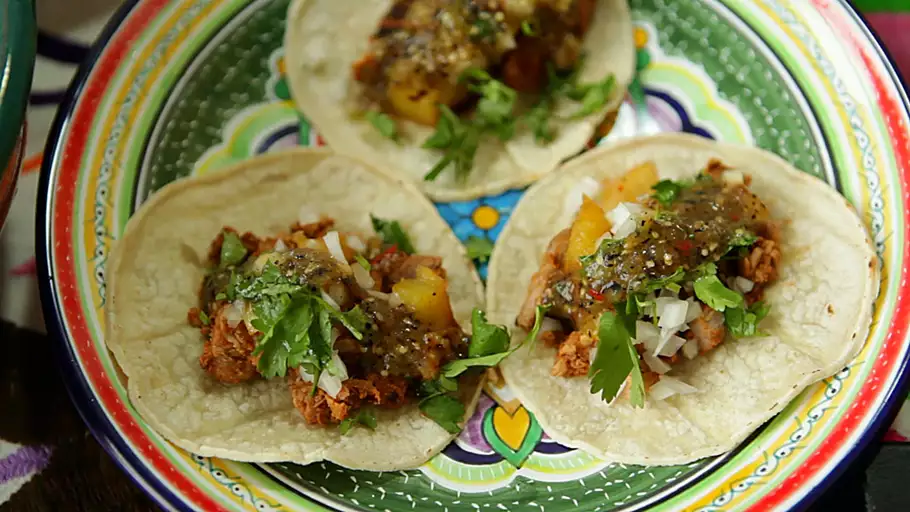

Tacos al Pastor

Ingredients
- 1 tomato
- 3 dried guajillo chile peppers, seeded
- 2 dried ancho chile peppers, seeded
- 1 pineapple, sliced 3/4-inch thick
- 1/2 cup orange juice
- 1 onion, quartered
- 1/4 cup white vinegar
- 2 chipotle peppers in adobo sauce
- 1 tablespoon salt, or to taste
- 2 cloves garlic, crushed
- 3 cloves
- 1 tsp cumin seeds
- 1 tsp dried oregano
- 2 pounds boneless pork loin, thinly sliced
Steps
- Cook tomato on a ridged grill pan over medium-high heat until slightly blackened, about 5 minutes. Remove from heat and cool until easily handled. Peel off skin and remove seeds.
- Bring a small pot of water to a boil. Add guajillo and ancho chile peppers; cook until softened, about 5 minutes. Drain.
- Combine tomato flesh, softened chile peppers, 2 slices pineapple, orange juice, quartered onion, vinegar, chipotle peppers, salt, garlic, cloves, cumin seeds, and oregano in a blender; blend until smooth.
- Arrange pork slices in a glass or ceramic baking dish. Pour blended mixture over pork, ensuring all sides are evenly coated. Cover baking dish with plastic wrap.
- Marinate pork in the refrigerator, 4 hours to overnight.
- Cook remaining pineapple slices on a ridged grill pan over medium-high heat until slightly blackened and soft, about 5 minutes per side. Chop into small pieces.
- Wipe out grill pan and preheat over medium-high heat. Cook marinated pork in the hot pan, turning once, until browned, 4 to 5 minutes
- Chop pork coarsely into small pieces against the grain. Serve with pineapple, chopped onion, and cilantro.